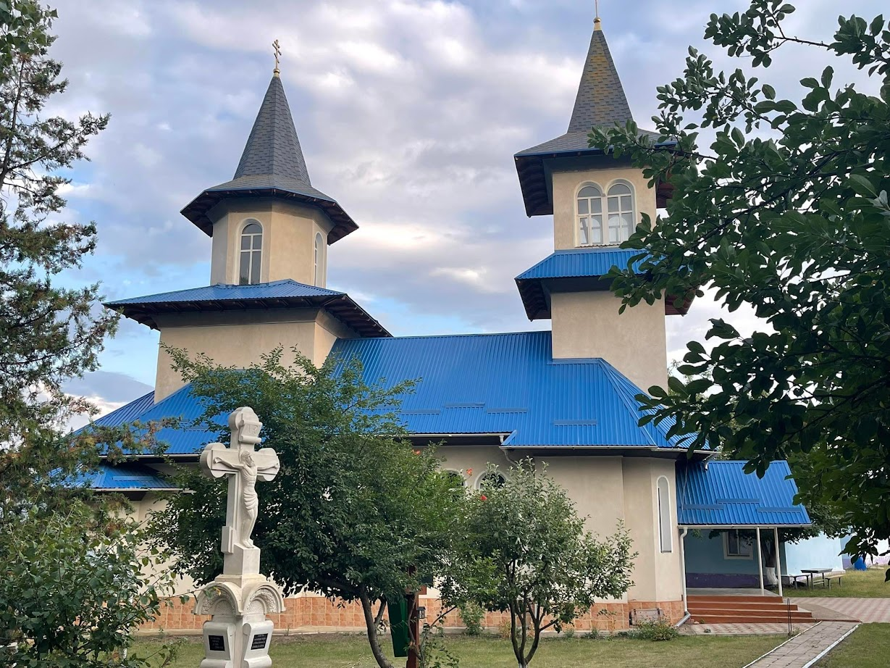

Obiective turistice - Sărățica Nouă
Biserica"Sfantul Nicolae"
Biserica cu hramul,,Sf Nicolae" din satul Sărățica Nouă a fost zidita in anul 1903 din lemn. Distrusa fiind in perioada sovietica,a fost reconstruita in anul 1995 cu ajutorul comunitatii. Biserica activeaza din anul 1996. Pe teritoriul bisericii se gaseste ,,Izvorul minunilor",a carui apa se foloseste atat la sfintire cât si la tămăduire
Monumentul istoric - ,,Valul lui Traian"

Valul lui Traian reprezintă o fortificaţie din perioada antică târzie, atestat pentru prima dată documentar la 13 martie 1489. Valurile sunt situate în partea de sud a Republicii Moldova şi prezintă două ramificaţii principale: "de jos" şi "de sus". Valul de jos are o lungime de 126 km şi se întinde pe teritoriul Ucrainei. Valul de sus are lungimea de 138 km avându-şi graniţa între orașul Leova la vest şi satul Copanca de lângă Chiţcani la est, iar în raionul Leova începe din satul Filipeni, trece prin satul Troiţa şi urmează drumul spre raionul Cimişlia pe lângă satele Troian, Ialpugeni, Caracui şi Sărăţica Nouă. Înălţimea “Valurilor” în prezent nu depăşeşte 1,5-3 metri.“Valurile lui Traian” sunt rămăşiţele construcţiilor defensive din epoca împăratului Traian, sau linia de demarcare dintre romani şi lumea „barbară”, neromană.